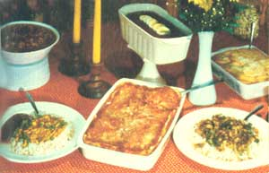

Barbara Heller shows how to turn a tried and true staple into six mouthwaterin' meals.
It's hard to find a more healthful-or less expensive-food than soybeans. These "miracle" legumes are not only low in starch, but high in protein, vitamins, minerals, and lecithin.
And here are some cosmopolitan recipes that have all been kitchen-tested (by three hungry men) and rated excellent! However, before you attempt anything fancy, you should first know how to prepare the beans for use.
Soak a pound of soybeans in enough water to cover 'em by two inches. (These beans will nearly triple in size, so use a big pot.) After the soybeans have soaked for a day, skim the film that will have formed, add a teaspoon of salt (and more water, if necessary), and bring the pot to a boil. Then, reduce the heat and let the beans simmer until they're tender (usually about 2-1/2 to 3 hours). Skim the foam from time to time, and don't let the pot boil over: A floor full of beans is a real chore to clean up!
(I usually cook one or two pounds of soybeans a week, leave half of them whole, and grind up the rest. This single cooking gives me the basis for a week's meals with a minimum of work. I also save and store the leftover, nutritious cooking water for later use in soups, breads, and so forth.)
Cooked beans can-when put through a food grinder-be substituted for (or added to) ground meat in almost any recipe. (Just be sure you don't get them too tender, or they'll form a paste when you try to grind 'em.) All of the following dishes call for already "prepared" soybeans, so start soaking your beans the day before you plan to serve the meal.
Sauté 1 chopped onion, 2 cloves of finely minced garlic, and 1 chopped green pepper-in 2 tablespoons of safflower oil-until the onions are golden. Add 3 cups of cooked and ground soybeans, 2 cups of tomato purée or canned tomatoes, 1 tablespoon of chili powder, 2 teaspoons of salt, 1 teaspoon of paprika, and 1 teaspoon of sweet basil or oregano . . . then let the pot stand covered (but not over heat) while the flavors blend. Later-about half an hour before serving time-heat the mixture to a boil and let it simmer. (You can add more chili at this time if you like really hot food.) The spicy dish is great served over brown rice or in tacos, and a little grated cheese-sprinkled on top of your chili-will make it especially delicious.
Combine 1-1/2 cups of prepared ground soybeans, 1-1/2 cups of ground, cooked black beans, 1 cup of cooked brown (or wild) rice, 1 grated onion, 1/2 cup of tomato sauce, 1-1/2 teaspoons of salt, 1 teaspoon of dry mustard, 1/2 teaspoon of garlic powder, and 1 teaspoon of paprika. Put about a third of this mix into a greased loaf pan, top it with 3 sliced, hard-boiled eggs, and then pack in the remainder of the mixture.
Finally, cover the loaf with a combination of 1/4 cup of catsup, 2 tablespoons of mustard, 2 tablespoons of brown sugar, and 1 tablespoon of molasses . . . and bake it for an hour at 350°F.
(You can also shape the loaf mix into patties and broil or fry 'em to a golden brown. These "burgers" should be sprinkled with grated cheese-or wrapped around a piece of cheese-before they're cooked.)
Sauté 1 chopped onion and 1 minced clove of garlic-in 2 tablespoons of safflower oil-until the pieces turn golden. Add 3 cups of "basic recipe" ground soybeans, stir to separate any lumps, and then brown slightly. When the beans are ready, mix in 1-1/2 cups of tomato sauce, 1/4 cup of dry white wine or sherry, 1/2 teaspoon of paprika, and 1 teaspoon of salt ... and let the pan simmer for 10 minutes. Meanwhile, cut 1 medium eggplant into 1/4"-thick slices, dip each piece in flour, and sauté 'em in hot oil until they're lightly browned on both sides. Drain the slices on absorbent paper.
While the eggplant drains, grease a 2-1/2-quart casserole dish and line the bottom with 1/8 cup of wheat germ. Then, place alternate layers of eggplant and soybean mixture in the dish, and top it with 2 sliced tomatoes.
For the finishing touch, mix 1 cup of yogurt, 2 egg yolks, 2 tablespoons of melted butter, and 1/4 cup of flour in a separate bowl. Pour this mixture over the tomato slices, sprinkle on another 1/8 cup of wheat germ, and bake the moussaka in a 350° F oven for 45 minutes.
Cook 1 cup of sliced onions in hot oil until golden. Add 1 cup of sliced celery, 1/2 cup of sliced water chestnuts, and 1 cup of sliced mushrooms . . . and sauté these ingredients for 2 minutes more. After that's done, stir in 1 cup of prepared (whole) soybeans and 1 cup of sliced green scallions.
Then, in a separate bowl, combine 1 cup of soy sauce, 1/2 cup of broth (beef, chicken, or vegetable), 1/4 cup of dry sherry or sake (optional), 3 tablespoons of brown sugar, and 1/4 teaspoon of pepper. Pour this mixture into the pan, cook it for 5 minutes (uncovered), and serve the sukiyaki with rice or thin noodles. (You can use your imagination to vary the vegetables in this recipe. For instance, why not substitute bamboo shoots, green or red peppers, green beans, or thinly sliced carrots for the water chestnuts, mushrooms, or scallions? Each change will produce a distinctive-and delicious-dish.)
Sauté 1 large chopped onion and 1 clove of minced garlic. Transfer these ingredients to a big saucepan and stir in 1 large can of tomatoes (use the liquid, too!) and 1 can of tomato paste. Fry some mushrooms (these are optional, so the amount is up to you) and add 'em to the pan, too. Then, lightly brown 2 cups of ground soybeans and mix them in. Bring the ingredients to a boil, reduce the heat, and let 'em simmer (covered) for 1 hour. (While the sauce cooks, add salt and pepper to taste.)
Meanwhile, cook and drain 1 pound of lasagna noodles. Pour some of the sauce into the bottom of a 9" X 13" baking pan, and add alternate layers of noodles, grated Parmesan cheese (1-1/2 cups, total), sauce, sliced mozzarella cheese (1-1/2 cups, all told) and dabs of ricotta cheese (about 1-1/2 pounds in all). Repeat the layers until your ingredients are used up, and top the lasagna with sauce and grated cheese. This Italian delight should be baked in a 350°F oven for 15 minutes...or until it's firm.
Cook 1 cup of green peas, 1 cup of sliced carrots, 1 cup of peeled and diced potatoes, and 1 cup of string beans (cut into inch-long pieces) together in enough salted water to cover everything. When the vegetables are tender-but still crisp-set the pan aside without draining the liquid from it.
Then-in a separate pot-heat 4 tablespoons of safflower oil and add 1-1/2 tablespoons of curry powder (or make your own curry seasoning with 1 teaspoon of cumin seed, 1 teaspoon of salt, 2 teaspoons of mustard seed, 2 teaspoons of turmeric powder, 1 teaspoon of coriander, and 3/4 teaspoon of cayenne pepper). Blend the oil and spices well and add the vegetables, cooking liquid, and 1-1/2 cups of prepared soybeans. Then bring the pot to a boil and mix in 1/2 cup of yogurt. Simmer, stirring occasionally, for 15 minutes. Add more water if a thinner curry is desired, and use more or less cayenne pepper to vary the dish's Spiciness. (The turmeric gives curry its yellow hue, so be sure to wipe up any spills right away . . . because this spice will color a table or counter, too!)
Serve the finished curry with rice and chutney ... it's an inexpensive meal that's fit for a maharajah!
|
 |
|
|